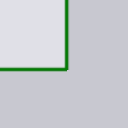
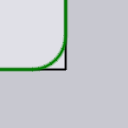
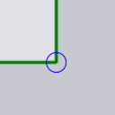
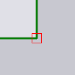

Corner Treatment

แผง Corner Treatment ใช้สำหรับการจัดการพิเศษ ที่มุมแหลมของการตัดเลเซอร์์ เข้าถึงแผงนี้โดยการคลิก ใกล้มุมของการตัดเลเซอร์
-
Auto compute: เมื่อการตั้งค่า auto-compute เปิดอยู่ (ค่าเริ่มต้น) TecZone Laser จะคำนวณการประมวลผลมุมที่เหมาะสมโดยอิงจากเครื่องจักร LTT ที่ใช้ และมุมที่มุมนั้น หากคุณต้องการแก้ไข corner treatment คุณต้องปิดฟังก์ชันนี้ก่อน
-
การดูแลรักษาพื้นผิว: ประเภทของการจัดการมุม (ดูตาราง ด้านล่างสำหรับรายละเอียด) วิธีการบางแบบมีพารามิเตอร์ (เช่น
radius หรือ time ที่ใช้ควบคุมกระบวนการที่มุม)
-
รัศมี หรือ Time (sec): วิธีการบางแบบ (เช่น Rounding และ Looping) ต้องการรัศมีเป็นอินพุต บางแบบ Dwell และ Cool ต้องการ เวลา delay
-
Selectors ที่ด้านล่างของแผงนี้ใช้เพื่อขยาย ชุดของมุมที่เลือก เพื่อแก้ไขพร้อมกันได้
-
Similar on this contour: คลิกที่นี่ เพื่อเลือกมุมทั้งหมดในคอนทัวร์ที่มีมุมคล้ายกับที่เลือก โดยจะแสดงกากบาทสีน้ำเงินเล็กๆ จากนั้นการแก้ไขทั้งหมดจะ ถูกนำไปใช้กับมุมเหล่านี้[1]
-
All on this contour: เหมือนตัวเลือกด้านบน แต่เลือก_มุมทั้งหมด_ในคอนทัวร์นี้ ไม่ว่าจะมีมุมเท่าไร
-
Similar on all contours: เลือกมุมที่คล้ายกัน (มุมเดียวกัน) ในคอนทัวร์ที่ตั้งค่าเครื่องมือทั้งหมดของชิ้นงาน เพื่อแก้ไขพร้อมกันได้
-
Treatment Methods
ตารางด้านล่างแสดงวิธีการจัดการมุมที่ต่างกัน การตั้งค่า Rounding และ Looping จะเปลี่ยนแปลงเรขาคณิตของ รอยตัดให้เห็นได้ชัดเจน ขณะที่วิธีอื่นๆ จะเพิ่มไอคอนเล็กๆ ที่มุมเพื่อแสดง ประเภทของการประมวลผลที่เกิดขึ้นตำแหน่งนั้น
| วิธีการจัดการ | คำอธิบาย | ตัวอย่าง |
|---|---|---|
Do nothing |
ไม่มีการประมวลผลที่มุม |
 |
Rounding |
ปัดมุมให้โค้งมน |
 |
Looping |
เพิ่มลูปที่มุม |
|
Dwell |
หยุดค้างที่มุม |
 |
Cool |
ทำให้เลเซอร์เย็นลงที่มุม |
|
Stop |
หยุดที่มุม |
 |
Slowdown |
ลดความเร็วเลเซอร์ที่มุม |
|